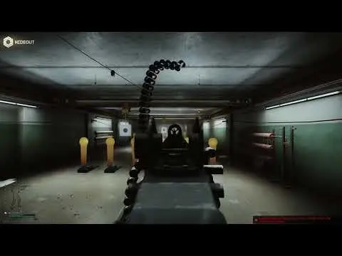

Recoil Rework (Rewrite)
- Downloads
- 7,167
- Favourites
- 23
- Mod lists
- 63
Introduction
THE CITY’s vanilla system feels weightless, this full recoil replacement mod attempts to improve it. Recoil is now mostly based on your weapon’s caliber, which makes weapons of the same caliber/platform perform similarly across the board. As an added benefit it also makes things easier to balance, which wasn’t really possible before with the Legacy version of Recoil Rework. The mod also overhauls visual recoil and makes things more wibbly-wobbly and stuff.
The mod is still in it’s early stages so any feedback is welcome.
Why not update the original Recoil Rework?
I wanted to keep the original Recoil Rework readily available for those that prefer it or need it for some other reason. The two mods also have a very different approach to handling recoil so I think a new release is warranted. Do not install both versions (Legacy & Rewrite), only pick one!
Preview

Installation
Drag and drop. Like any other mod.

Known Issues
- Sprinting while in left stance messes up your weapon position for the rest of the raid (fixed in 1.0.1)
- Inspection screen recoil values lie to you
- Only certain attachments (grips and muzzle devices) currently contribute towards recoil reduction. This is due to bullpups being incapable of having stocks, upper receivers and such.
- Some weapons cause busy hands in the hideout and you’ll have to restart your game if this happens. Probably an invisible
nullrefsomewhere, I wouldnt know. - Probably something else, let me know!
Compatibility
The mod is compatible with WTT-Content Backport and WTT-Armory out of the box. However, if you’d like to add your own custom calibers then you can do so within the server mod in SPT/user/mods/RecoilReworkServer/Config/CaliberData/. You can also modify weapon data in SPT/user/mods/RecoilReworkServer/Config/WeaponData/. There are plenty of examples, so go wild!
Example caliber data:
// example_caliber.jsonc
{
"CaliberOne": {
"BaseVerticalKick": 40,
"BaseHorizontalKick": 30,
"BaseRollKick": 250,
"BaseBackwardsRecoil": 4
},
"CaliberTwo": {
"BaseVerticalKick": 20,
"BaseHorizontalKick": 15,
"BaseRollKick": 120,
"BaseBackwardsRecoil": 4
}
}
Example weapon data:
// example_weapon.jsonc
[
{
// use either weaponId or weaponIds. DO NOT USE BOTH!
"weaponId": "5fb64bc92b1b027b1f50bcf2"
"weaponIds": [
"5fb64bc92b1b027b1f50bcf2",
"5fc3f2d5900b1d5091531e57"
],
// caliber multipliers for the specified weapons, in case a weapon has a special recoil mitigation system
"weaponRecoilModifiers": {
"VerticalKickMultiplier": 0.3,
"HorizontalKickMultiplier": 0.25
},
// you can override any vanilla weapon properties here
"overrideProperties": {
// really nice recoil pivot value
"RecoilCenter": {
"x": 0.05,
"y": -0.3,
"z": 0
}
}
}
]
A small list of mods I would recommend using alongside Recoil Rework:
… and a few others, but I’m gatekeeping them.
Version
1.1.0
Before installing the update please delete old files (server + client mods and client config BepInEx/config/com.pein.recoilrework2.cfg)
- Spray penalty system rework, weapons should feel nicer to shot from hipfire
- Added camera recoil (GASP)
- Added config options for camera recoil, stance recoil multipliers and more
- Added automatic weapon kick compensation during full-auto
- Smoothed camera recoil and hopefully better matched them to recoil visuals
- Rebalanced almost all caliber data
- Added weapon-specific recoil data to… more weapons!
- Added (crappy) bullpup detection and handling
- Improved recoil recovery behavior
- Fixed tremors not working
- Fixed camera recoil not working while mounted
- Made recoil better, just to you know. I just added this additional rotating things.. just to have more. yeah
- And probably more that I’ve certainly forgotten about… feels way nicer though!
this update is mostly focused on polish, improved recoil feel and cleaning up some long-standing issues, such as the lack of tremor effects when having broken arms. what remains left are the proper display of weapon stats and proper attachment rebalancing and handling of bullpups (because this is a hack!). i will go over the feedback again and make another update in the near future, or disappear again. we’ll see
Version
1.0.1
- Fixed an issue where the player animator would incorrectly activate left stance when leaving the sprint state
- Fixed left stance animation fps dependency
- Slightly touched up the left stance transition
oops
Version
1.0.0
- Initial release